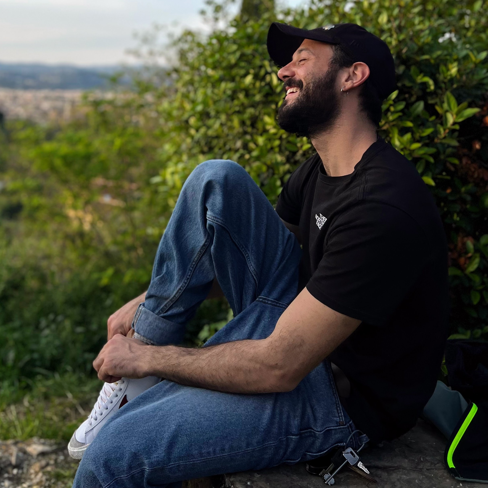

CIAO! IO SONO MIRCO!
BENVENUTO NELLA MIA PAGINA DI PRESENTAZIONE

Sono nato nel 1991, in una piccola città del Piemonte. Dopo le scuole superiori sono partito per la Spagna, dove
ho vissuto circa 6 mesi, lavorando per un'azienda di ricerca nel campo delle scienze agrarie.
Tornato in Italia, ho frequentato la facoltà di Giurisprudenza nell'Ateneo dell'università degli Studi di
Genova.
Tra viaggi e studi ho avuto la fortuna di coltivare diversi interessi, come:
- Fotografia
- Musica
- Trekking
- Gaming
- Piccoli lavori stagionali
...ma non si può sempre girovagare! Ho lavorato in diversi contesti e ambienti, collezionando esperienze.
Qui di seguito, le più rilevanti:
|
Inizio |
Fine |
| Futurgem s.r.l. |
02/10/2014 |
28/12/2021 |
| Mi.Va s.r.l. |
01/04/2021 |
01/04/2022 |
Se hai curiosità non esitare a contattarmi!
Email Mirco